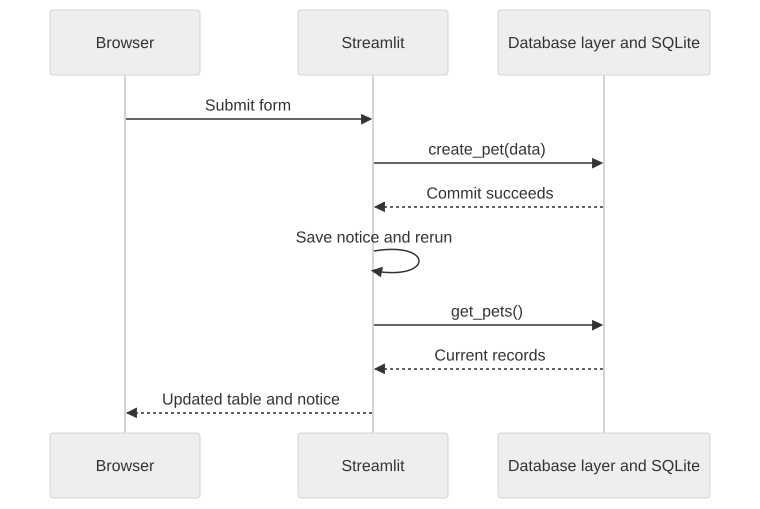

Part One: The Pets App in Streamlit
Gregory S. DeLozier, PhD
One button. One counter.
| Location | Lifetime |
|---|---|
| Local variable | This script run |
| Session State | This browser session |
| SQLite record | Until changed or deleted |
Where should a pet live?
Pets: name, age, type, food, owner
Owners: name, city, type of home
List, add, edit, delete
Database: data/pets.db
| Flask | Streamlit |
|---|---|
| Template | Python display calls |
| Route and form data | Widget values and submit branch |
| Redirect after saving | Rerun after saving |
| Database functions | Database functions |
A list of dictionaries becomes a table.
with st.form(prefix):
name = st.text_input("Pet name",
value=pet["name"],
key=prefix + "_name")
submitted = st.form_submit_button("Save pet")Write only when submitted.
Owner label: Jordan (#2)
Selected value: 2

On the next run:
Casey’s fields and Luna’s fields have different keys.
Reassign Casey. Save. Reopen the form.
Confirm the selected record.
An owner with pets cannot be deleted.
Reassign the pets, then delete the owner.
Change a pet in one tab.
Rerun the other tab by changing its sidebar selection.
Which state is shared?
Interface: collect values and display results
Database layer: store records and enforce rules
Next comparison: the same application in NiceGUI